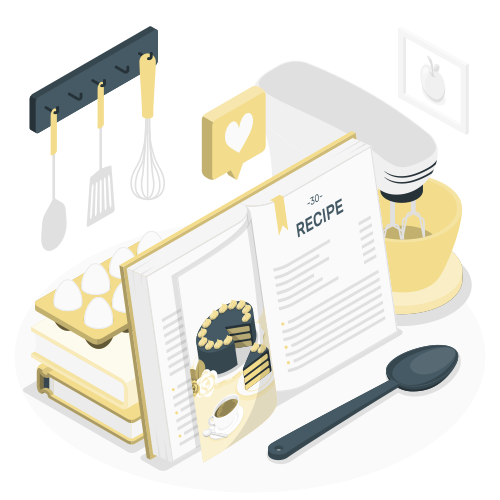

The moment inspiration struck while scrolling through recipes online.
I've always loved cooking, but banana bread seemed like the perfect challenge for a lazy Saturday afternoon.
After spending an hour comparing recipes from three different Tiktoks, I finally settled on one that promised
"moist, fluffy perfection." Spoiler alert: things didn't go exactly as planned.
Ingredients Laid out
Reading through the ingredient list and getting everything set up.
The recipe called for precise measurements: 3 ripe bananas, 1/3 cup of butter, 2 eggs, and a list of dry ingredients
I had to hunt for in my pantry. I was determined to follow it exactly. I grabbed my trusty measuring cups and got ready for greatness.
My confidence was through the roof!!!
Mixing, Chopping, Things Are Looking Messy...
Assembling all the ingredients felt like preparing for a small kitchen expedition.
I started with mashing the bananas in a large bowl. Then, I melted the butter and mixed it in, followed by the eggs and vanilla extract.
When I added the flour and baking soda, I thought, "Why not add more cinnamon for extra flavor?"
I also decided to use a stand mixer instead of mixing by hand to save time. I cranked it up to high speed and let it do the work.
I walked away for a moment to check my phone, and when I came back, the batter looked... different.
Little did I know, that small decision would lead to a very cinnamon-y and sturdy outcome.
The Results Looked Nothing Like The Video

The bread was looking a bit dense.
As I pulled the loaf out of the oven, I immediately noticed it looked denser and darker than the video had shown.
The aroma was strong—too strong, thanks to the extra cinnamon and the bread looked dense.
It kind of resembled a brick more than the fluffy treat I had envisioned. My heart sank a little,
but I was determined to give it a try anyway.
The Moment of Truth!
Taste test.
Although I was super heartbroken about the look of my banana bread, I decided to give it a taste. I picked up a knife
and sliced off a piece, bracing myself for the worst. As I held a slice it felt surprisingly sturdy and not as soft as
as normal bread. It also felt like I was holding something a bit heavy. I took a bite, and to my surprise, it wasn't terrible!
The cinamon added warmth and depth, and the bananas provided a nice sweetness. It was a bit denser than I hoped, but overall, it was edible!
The Sweet Conclusion
The bread turned out better than anticipated, so I posted my creation online.
The banana bread was in no way perfect, but it was edible and had a unique twist thanks to the extra cinnamon.
I decided to share my "fail(ish)" creation on social media, complete with a humorous caption about my kitchen adventure.
To my surprise, friends and family responded with encouragement and even requests for more "experimental" recipes.
Despite the chaos, I learned a lot about baking and the importance of following recipes closely. Next time,
I decided to be more careful with my ingredients and technique.